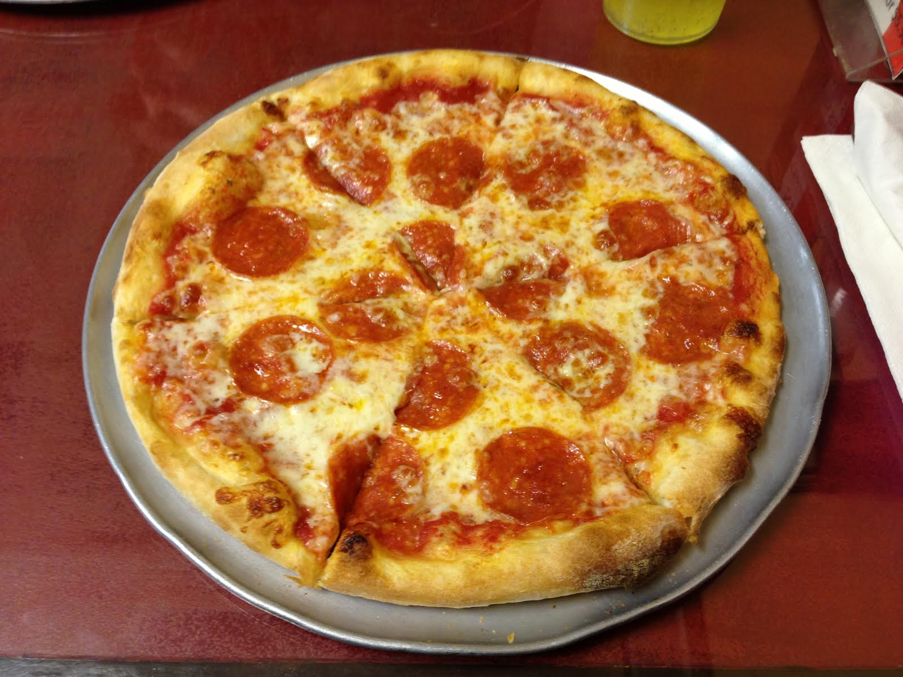

Leonardo's personal pepperoni pizza

Leonardo and his brothers often all
want pizza
Cooking a personal pizza for each is a better way to share
Ingredients
Contadina Quick Pizza Sauce
- 1/2 (12 ounce can) of Contadina tomato
paste
- 1 teaspoon dried oregano, crush it
- 1 teaspoon dried basil, crush it
- 1/2 teaspoon garlic powder
- 1/2 teaspoon onion powder
- 1/2 teaspoon sugar
- 1/2 teaspoon salt
- 1/4 teaspoon black pepper
Fleischmann's Easy Pizza Crust
- 3 1/4 cups all-purpose flour, or more
as needed
- 1 tablespoon of sugar
- 1 1/2 teaspoon of salt
- 1 1/3 cups very warm water
(120 degrees F to 130 degrees F)
- 1/3 cup oil
Toppings
- 1 (6 ounce) package Hormel pepperoni
- 1 cup of shredded mozzarella cheese,
or more to taste
Other
- 2 (12 inch) pizza baking pans
- A medium bowl
Steps
- For sauce: Combine all sauce ingredients with
1/2 cup of water in a
medium bowl; set aside for flavors to develop
while making crust. Freeze remaining paste.
- For crusts: Combnine 2 cups of
flour with the dry yeast, sugar and salt.
Add the water and oil and mix until well
blended (about 1 minute).
Gradually add enough remaining flour slowly,
until a soft, sticky dough ball is formed.
- Knead for about 4 minutes, on a
floured surface, until dough is smooth and
elastic. Add more flour, if needed. (If using
RapidRise yeast, let dough rest, covered, for
10 minutes.)
- Divide dough in half. Pat each half (with floured
hands) into a 12-inch greased
pizza pan Or roll dough to fit pans.
- For pizzas: Preheat oven to
425 degrees F. Top crusts with
sauce, pepperoni and cheese.
- Bake for 18 to 20 minutes until
crusts are browned and cheese is bubbly. For
best results, rotate pizza pans between top
and bottom oven racks halfway through baking.
Go to top
Back to Odin Recipes Home